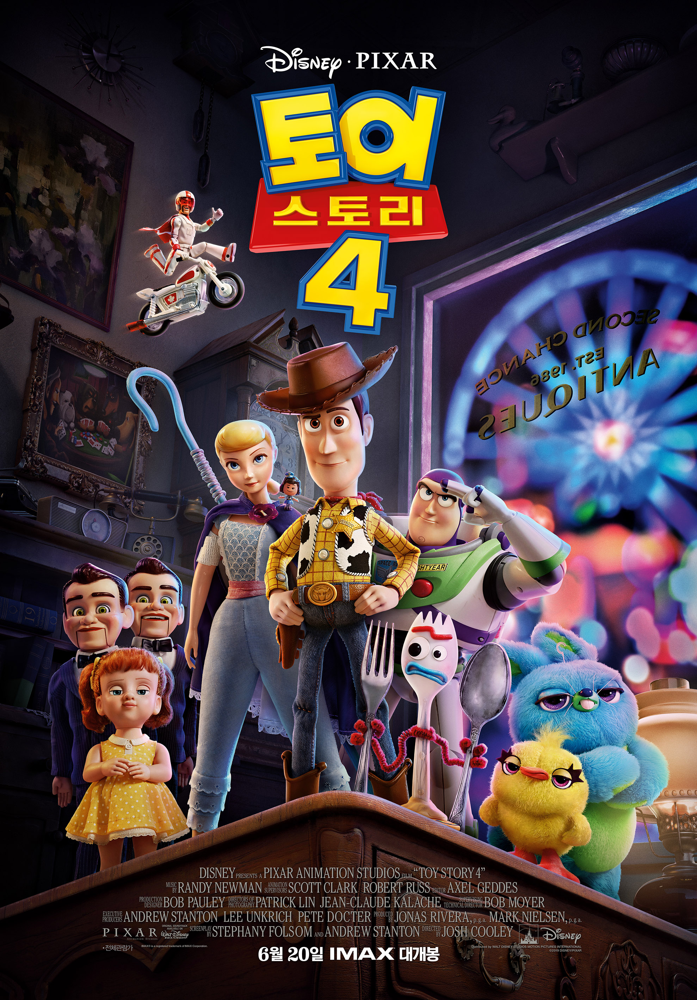

Inception

타인의 꿈에 들어가 생각을 훔치는 특수 보안요원 코브. 그를 이용해 라이벌 기업의 정보를 빼내고자 하는 사이토는 코브에게 생각을 훔치는 것이 아닌, 생각을 심는 ‘인셉션’ 작전을 제안한다. 성공 조건으로 국제적인 수배자가 되어있는 코브의 신분을 바꿔주겠다는 거부할 수 없는 제안을 하고, 사랑하는 아이들에게 돌아가기 위해 그 제안을 받아들인다. 최강의 팀을 구성, 표적인 피셔에게 접근해서 ‘인셉션’ 작전을 실행하지만 예기치 못한 사건들과 마주하게 되는데…
Transformers: The Last Knight
옵티머스 프라임은 더 이상 인간의 편이 아니다. 트랜스포머의 고향 사이버트론의 재건을 위해 지구에 있는 고대 유물을 찾아나선 옵티머스 프라임은 인류와 피할 수 없는 갈등을 빚고, 오랜 동료 범블비와도 치명적인 대결을 해야만 하는데… 영원한 영웅은 없다! 하나의 세상이 존재하기 위해선 다른 세상이 멸망해야 한다!
Toy story4
장난감의 운명을 거부하고 떠난 새 친구 ‘포키’를 찾기 위해 길 위에 나선 ‘우디’는 우연히 오랜 친구 ‘보핍’을 만나고 그녀를 통해 새로운 세상에 눈을 뜨게 된다. 한편, ‘버즈’와 친구들은 사라진 ‘우디’와 ‘포키’를 찾아 세상 밖 위험천만한 모험을 떠나게 되는데…